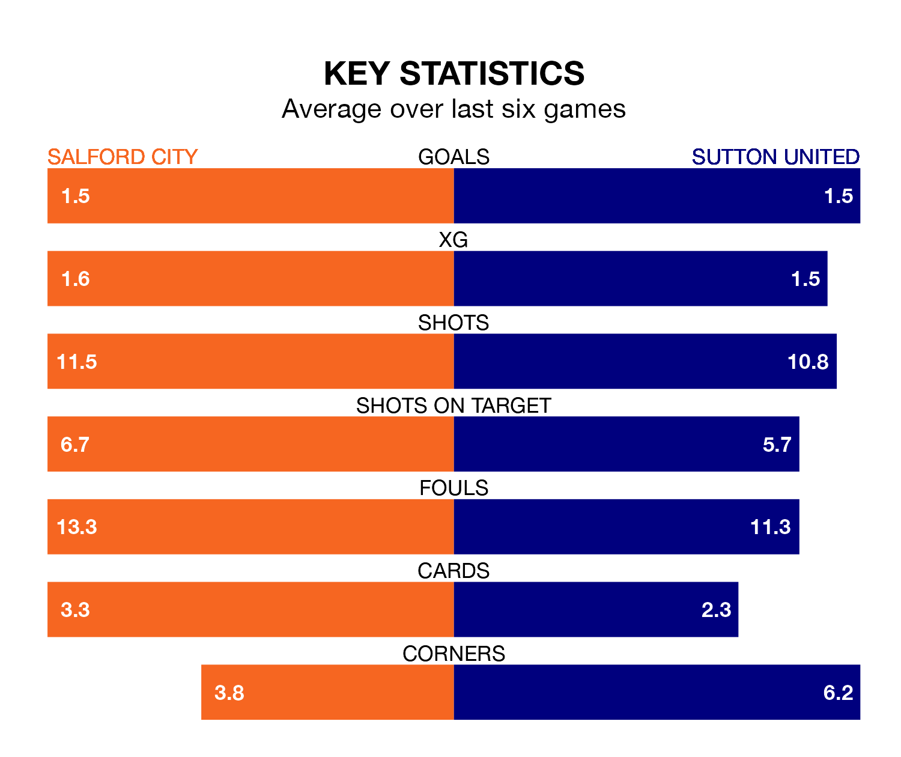

Struggling Sutton United face Salford City away at the Peninsula Stadium on Friday looking to build on a win in their last league outing.
After securing all three points with a 3-1 victory over Accrington Stanley on March 23, the Us sit 23rd in EFL League Two.
They travel to play a Salford side 19th in the standings, who also won their last match, 2-1 against Notts County.
In Matt Smith, Salford have one of the league's most on-form strikers so far this season. He has notched 23 goals in 40 appearances, to sit second in the scoring charts.
His goal rate of one every 141 minutes is quicker than that of Harry Smith, Sutton's top scorer with a goal every 271 minutes, and a total of nine goals in 31 games.
In the last 10 years, Salford and Sutton have played each other on seven occasions. Salford won four of them, Sutton one, and they drew twice.
On average, the Ammies scored 1.3 goals and the Us 0.4 in those matches.
Their last meeting was on October 3, when Salford won 2-0 away.
With 45 goals in 40 games so far this season, United are the league's third-lowest scorers with 1.1 goals per game. And they are conceding more than average, letting in 71 goals at a rate of 1.8 per game.
City, meanwhile, are average scorers, with 1.5 goals per game. They have conceded 1.8 goals per game.
The Ammies are in mixed form in EFL League Two, with two wins and two draws from their last six games.
With three wins and a draw over that period, the Us' form is slightly better – they have taken 10 points from 18, compared to the home side's eight.
Updated: 12:16 (UTC), 25/03/24